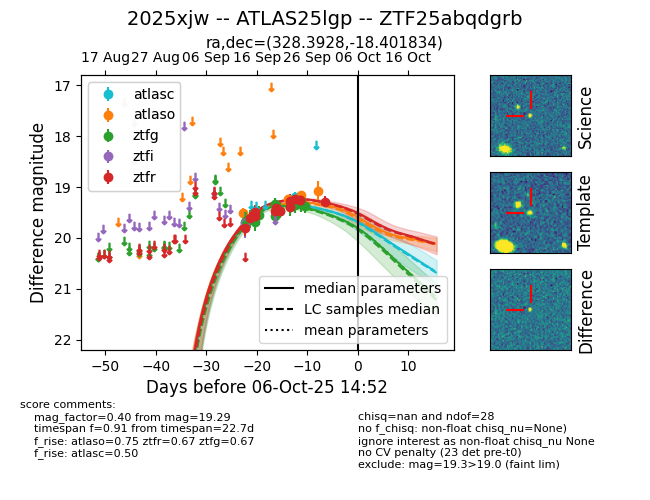
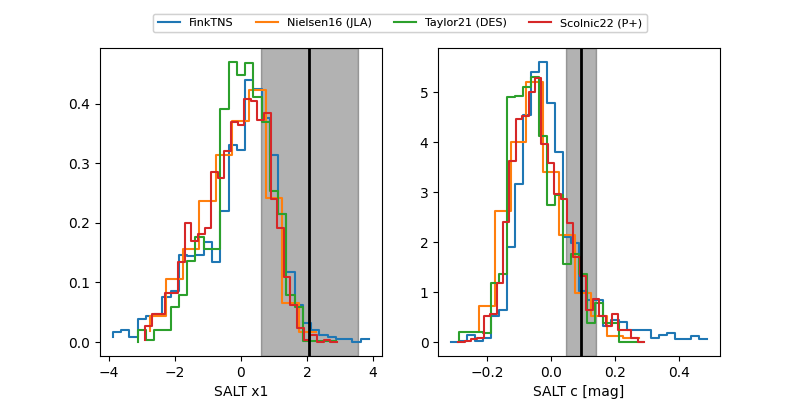

FINK: ZTF25abqdgrb
Lasair: ZTF25abqdgrb
ALeRCE: ZTF25abqdgrb
TNS: 2025xjw
YSE: 2025xjw
ZTF25abqdgrb (ztf,fink)
2025xjw (tns,yse)
ATLAS25lgp (atlas)
equatorial (ra, dec) = (328.3928,-18.40183)
galactic (l, b) = (35.3292,-48.29796)


last atlasc=19.20, atlaso=19.07, ztfg=19.37, ztfr=19.29
1 atlasc, 5 atlaso, 13 ztfg, 13 ztfr detections